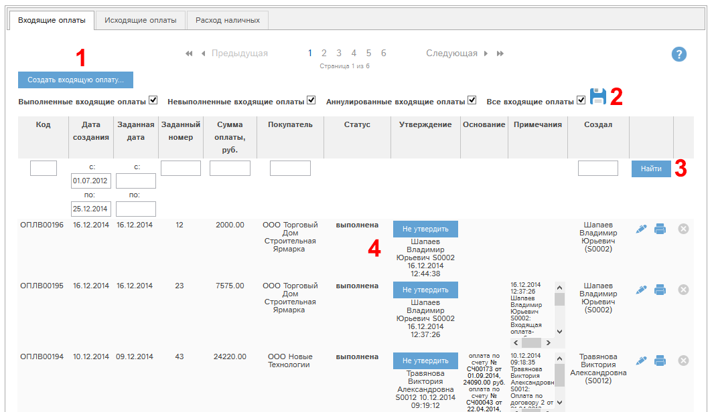
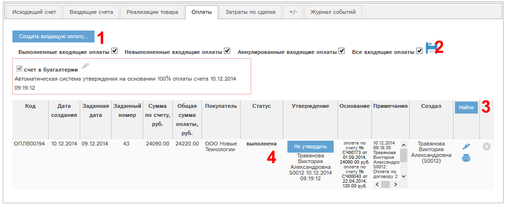

При наличии у Вас соответствующих прав Вам доступен раздел «Оплаты». В этом разделе на вкладе "Входящие оплаты" показан список оплат от покупателей, с которыми Вы работаете в программе «Мобильный офис».
Кроме того, входящие оплаты, привязанные к исходящим счетам, доступны на вкладке «Оплаты» исходящего счета.

Рис. 5.48 Фрагмент окна раздела «Входящие оплаты».

Рис. 5.49 Фрагмент вкладки «Оплаты» окна просмотра/редактирования исходящего счета.
Если в списке оплат видна кнопка «Создать входящую оплату…» (1), то у Вас есть права на создание оплаты.
Фильтр статусов (2) позволяет отфильтровать список оплат по статусам:
- Режим «Выполненные оплаты» - только оплаты в статусе «выполнена»
- Режим «Невыполненные оплаты» - только оплаты в статусе «не выполнена»
- Режим «Аннулированные оплаты» - только оплаты в статусе «Аннулирована»
- Режим «Все оплаты» - оплаты со всеми статусами.
Можно выделить несколько статусов, например: оплаты только в статусах выполнена, не выполнена.
Нажатие кнопки  позволяет запомнить в программе выбранные вами
статусы, и когда вы снова зайдете в раздел «Оплаты», то будут показаны документы
по сохраненному ранее набору статусов.
позволяет запомнить в программе выбранные вами
статусы, и когда вы снова зайдете в раздел «Оплаты», то будут показаны документы
по сохраненному ранее набору статусов.
Кроме того, в списке можно искать оплаты по полям:
- Код
- Дата создания
- Заданная дата
- Заданный номер
- Сумма оплаты
- Покупатель
- Кто создал
В колонке «Основание» приведен список исходящих счетов, к которым привязана данная входящая оплата.
С помощью кнопки  у конкретной оплаты можно просмотреть или
отредактировать данную оплату.
у конкретной оплаты можно просмотреть или
отредактировать данную оплату.
С помощью кнопки  можно аннулировать оплату.
можно аннулировать оплату.
Если кнопка серого цвета -  ,
то аннулировать данную оплату невозможно. Это может быть по нескольким
причинам:
,
то аннулировать данную оплату невозможно. Это может быть по нескольким
причинам:
- У Вас нет прав на аннулирование оплаты;
- оплата не в статусе «не утверждена».
При нажатии кнопки  будет выведено сообщение со списком причин, по
которым невозможно аннулировать эту оплату.
будет выведено сообщение со списком причин, по
которым невозможно аннулировать эту оплату.
Настройка колонок реестра
Все основные реестры программы могут быть индивидуально сконфигурированы: вы можете указать, какие колонки и в какой последовательности вы желаете видеть. Всегда можно вернуться к стандартному виду реестра. Рассмотрим работу этой функции на примере реестра контрагентов.
Для настройки реестра нажмите кнопку  :
:

Откроется окно настройки. Слева указаны доступные колонки (1), справа - колонки, которые показаны в реестре (2):

Для перемещения столбцов между блоками 1 и 2 выделите требуемые столбцы (можно выделить несколько столбцов, нажав и удерживая ctrl при их выделении), и нажмите кнопку > для перемещения столбцов из доступных в видимые, либо кнопку < для перемещения из видимых в доступные столбцы.
Доступна сортировка видимых столбцов (в блоке 2). Для того, чтобы поднять или опустить столбец или их группу, выделите требуемые столбцы и нажмите  для подъема или
для подъема или  для спуска столбца.
для спуска столбца.
Для того, чтобы сохранить внесенные изменения, нажмите Готово. Реестр обновится, и будут показаны выбранные вами столбцы в выбранной вами последовательности.
Для того, чтобы восстановить стандартный вид реестра, нажмите кнопку "Сделать стандартными".